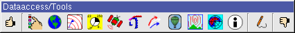

| Diana User Guide: Main window | Previous: Index | Next: Quick Menus | Index |

| Graphics window result | Mouse action | Keyboard | |
|---|---|---|---|
| Normal mode | Editing mode | All modes | |
| Zoom in | left mouse button | shift+left mouse button | z |
| Zoom out | right mouse button | shift+right mouse button | shift-z or x |
| Custom map sections | - | - | F2 |
| Define map sections | - | - | shift-F2 |
| Previous map section | - | - | F3 |
| Next map section | - | - | F4 |
| Big map section | - | - | F5 |
| Medium map section | - | - | F6 |
| Small map section | - | - | F7 |
| Detailed map section | - | - | F8 |
| Pan | middle mouse button | shift+middle mouse button | arrow Keys or w,a,s,d * |
| Standard area (Apply) | - | ||
| Standard area | - | - | Home |
The menu bar contains four menu items File, Options, Show and Help.
Save animation Save animation from current fields, satellite images, etc., using current settings. MPEG2 (*.mpg/*.mpeg) and MSMPEG4V2 (*.avi) is so far the only supported codecs, and this will probably not change if not requested as a new feature/enhancement (through http://diana.bugs.met.no).
To save an animation, a fixed time interval must first be set, using the time limiting button (see the "Animation" section, under "Time control and animation" in the index).
NOTE 1: It is not possible to use Diana while making an animation.
NOTE 2: Compile Diana with VIDEO_EXPORT to enable this feature.
The main window has two toolbars, Dataaccess/Tools and Time control.

The buttons on Data/Tools show/hides the dialogues for the available data in the system and tools for editing/trajectory-calculations etc. The button to the top/left applies the selections made in the dialogues.
Map-, field-, observation-, satellite-, and the object dialogue have the buttons "Apply" and "Hide" in the bottom.
The Time control toolbar has arrows to go backwards and forwards in time, and a time slider that shows the current time in the plotting window. The arrows to the right change the level for the fields.
| Diana User Guide: Main window | Previous: Index | Next: Quick Menus | Index |